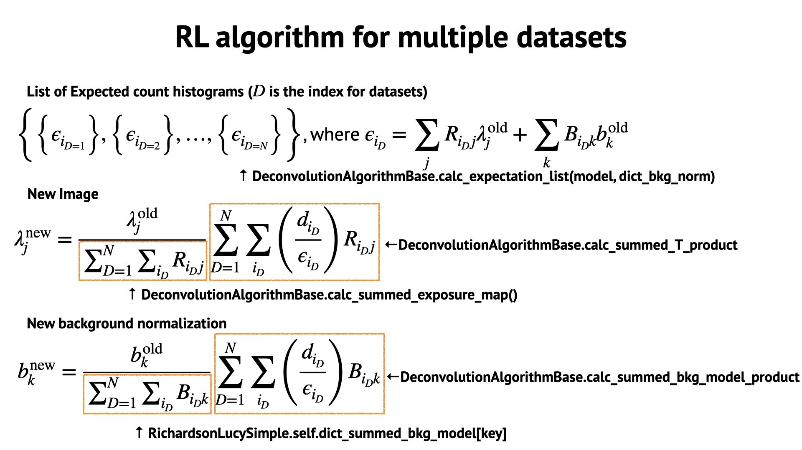
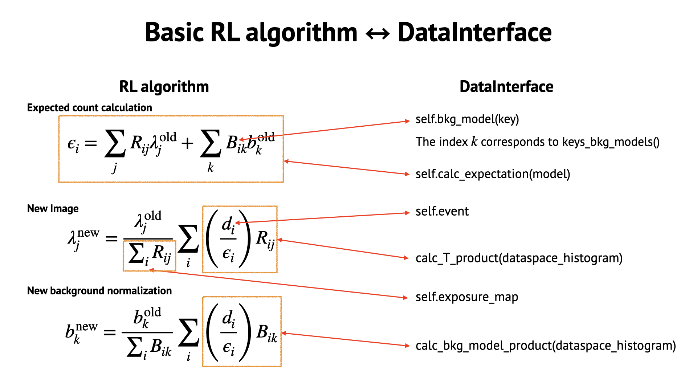

Image deconvolution
Algorithm description
 {kind=link}
{kind=link}
Classes
- class cosipy.image_deconvolution.ImageDeconvolution[source]
A class to reconstruct all-sky images from COSI data based on image deconvolution methods.
- model_classes = {'AllSkyImage': <class 'cosipy.image_deconvolution.allskyimage.AllSkyImageModel'>}
- deconvolution_algorithm_classes = {'RL': <class 'cosipy.image_deconvolution.RichardsonLucy.RichardsonLucy'>, 'RLsimple': <class 'cosipy.image_deconvolution.RichardsonLucySimple.RichardsonLucySimple'>}
- set_dataset(dataset)[source]
Set dataset
- Parameters:
dataset (list of
cosipy.image_deconvolution.ImageDeconvolutionDataInterfaceBaseor its subclass) – Each component contaning an event histogram, a background model, a response matrix, and a coordsys_conversion_matrix.
- set_mask(mask)[source]
Set dataset
- Parameters:
mask (
histpy.Histogram) – A mask which will be applied to a model
- read_parameterfile(parameter_filepath)[source]
Read parameters from a yaml file.
- Parameters:
parameter_filepath (str or pathlib.Path) – Path of parameter file.
- property dataset
Return the dataset.
- property parameter
Return the registered parameter.
- override_parameter(*args)[source]
Override parameter
- Parameters:
*args – new parameter
Examples
>>> image_deconvolution.override_parameter("deconvolution:parameter_RL:iteration = 30")
- property initial_model
Return the initial model.
- property mask
Return the mask.
- property results
Return the results.
- initialize()[source]
Initialize an initial model and an image deconvolution algorithm. It is mandatory to execute this method before running the image deconvolution.
- model_initialization()[source]
Create an instance of the model class and set initial values of it.
- Returns:
whether the instantiation and initialization are successfully done.
- Return type:
- class cosipy.image_deconvolution.ImageDeconvolutionDataInterfaceBase(name=None)[source]
A base class for managing data for image analysis, i.e., event data, background models, response, coordsys conversion matrix etc. Subclasses must override these attributes and methods.
Attributes: - self._event
A binned histogram of events. It is an instance of histpy.Histogram. Its axes must be the same of self._data_axes.
- self._bkg_models
A dictionary of binned histograms of background models. It is a dictionary of histpy.Histogram with keys of names of background models. Their axes must be the same of self._model_axes.
- self._summed_bkg_models
A dictionary of summed values of the background model histograms.
- self._exposure_map
A binned histogram of the exposures at each pixel in the model space. It is an instance of histpy.Histogram. Its axes must be the same of self._model_axes.
- self._model_axes
Axes for the data space. It is an instance of histpy.Axes.
- self._data_axes
Axes for the model space. It is an instance of histpy.Axes.
Methods: - keys_bkg_models()
It returns a list of names of background models.
- bkg_model(key)
It returns a binned histogram of a background model with the given key.
- summed_bkg_model(key)
It returns the summed value of the background histogram with the given key.
- calc_expectation(model)
It returns a histogram of expected counts from the given model.
- calc_T_product(dataspace_histogram)
It returns the product of the input histogram with the transonse matrix of the response function.
- calc_bkg_model_product(key, dataspace_histogram)
It returns the product of an input histogram with a background model with the given key.
- calc_likelihood(expectation)
It returns the log-likelihood with the given histogram of expected counts.
The basic idea of this class is to separate the data structure from the development of the image deconvolution algorithm.
When the image deconvolution is performed, the deconvolution algorithm will look at only the above attributes and methods, and will not care about the actual response matrix and how it actually calculates expected counts or the product using the transpose matrix of the response function.
- property name
- property event
- property exposure_map
- property model_axes
- property data_axes
- abstract calc_expectation(model, dict_bkg_norm=None, almost_zero=1e-12)[source]
Calculate expected counts from a given model map.
- Parameters:
model (
cosipy.image_deconvolution.ModelBaseor its subclass) – Modeldict_bkg_norm (dict, default None) – background normalization for each background model, e.g, {‘albedo’: 0.95, ‘activation’: 1.05}
almost_zero (float, default 1e-12) – In order to avoid zero components in extended count histogram, a tiny offset is introduced. It should be small enough not to effect statistics.
- Returns:
Expected count histogram
- Return type:
histpy.Histogram
- abstract calc_T_product(dataspace_histogram)[source]
Calculate the product of the input histogram with the transonse matrix of the response function. Let R_{ij}, H_{i} be the response matrix and dataspace_histogram, respectively. Note that i is the index for the data space, and j is for the model space. In this method, sum_{j} H{i} R_{ij}, namely, R^{T} H is calculated.
- Parameters:
dataspace_histogram (
histpy.Histogram) – Its axes must be the same as self.data_axes- Returns:
The product with self.model_axes
- Return type:
histpy.Histogram
- class cosipy.image_deconvolution.DataIF_COSI_DC2(name=None)[source]
A subclass of ImageDeconvolutionDataInterfaceBase for the COSI data challenge 2.
- classmethod load(name, event_binned_data, dict_bkg_binned_data, rsp, coordsys_conv_matrix=None, is_miniDC2_format=False)[source]
Load data
- Parameters:
name (str) – The name of data
event_binned_data (
histpy.Histogram) – Event histogramdict_bkg_binned_data (dict) – Background models as {background_model_name:
histpy.Histogram}rsp (
histpy.Histogramorcosipy.response.FullDetectorResponse) – Responsecoordsys_conv_matrix (
cosipy.image_deconvolution.CoordsysConversionMatrix, default False) – Coordsys conversion matrixis_miniDC2_format (bool, default False) – Whether the file format is for mini-DC2. It will be removed in the future.
- Returns:
An instance of DataIF_COSI_DC2 containing the input data set
- Return type:
- calc_expectation(model, dict_bkg_norm=None, almost_zero=1e-12)[source]
Calculate expected counts from a given model.
- Parameters:
model (
cosipy.image_deconvolution.AllSkyImageModel) – Model mapdict_bkg_norm (dict, default None) – background normalization for each background model, e.g, {‘albedo’: 0.95, ‘activation’: 1.05}
almost_zero (float, default 1e-12) – In order to avoid zero components in extended count histogram, a tiny offset is introduced. It should be small enough not to effect statistics.
- Returns:
Expected count histogram
- Return type:
histpy.Histogram
Notes
This method should be implemented in a more general class, for example, extended source response class in the future.
- calc_T_product(dataspace_histogram)[source]
Calculate the product of the input histogram with the transonse matrix of the response function. Let R_{ij}, H_{i} be the response matrix and dataspace_histogram, respectively. Note that i is the index for the data space, and j is for the model space. In this method, sum_{j} H{i} R_{ij}, namely, R^{T} H is calculated.
- Parameters:
dataspace_histogram (
histpy.Histogram) – Its axes must be the same as self.data_axes- Returns:
The product with self.model_axes
- Return type:
histpy.Histogram
- calc_bkg_model_product(key, dataspace_histogram)[source]
Calculate the product of the input histogram with the background model. Let B_{i}, H_{i} be the background model and dataspace_histogram, respectively. In this method, sum_{i} B_{i} H_{i} is calculated.
- Parameters:
key (str) – Background model name
dataspace_histogram (
histpy.Histogram) – its axes must be the same as self.data_axes
- Return type:
flaot
- class cosipy.image_deconvolution.ModelBase(*args: Any, **kwargs: Any)[source]
A base class of the model, i.e., a gamma-ray flux sky, and a gamma-ray distributions in a 3D space.
Subclasses must override these methods. The ImageDeconvolution class will use them in the initialization process.
Methods: - instantiate_from_parameters(cls, parameter) - set_values_from_parameters(self, parameter)
- abstract classmethod instantiate_from_parameters(parameter)[source]
Return an instantiate of the class using given parameters.
- Parameters:
parameter (py:class:yayc.Configurator) – Parameters for the specified algorithm.
- Return type:
py:class:ModelBase
- abstract set_values_from_parameters(parameter)[source]
Set values accordinng to the give parameters.
- Parameters:
parameter (py:class:yayc.Configurator) – Parameters for the specified algorithm.
- mask_pixels(mask, fill_value=0)[source]
Mask pixels
- Parameters:
mask (
histpy.histogram.Histogram)fill_value (float or
astropy.units.quantity.Quantity)
- class cosipy.image_deconvolution.AllSkyImageModel(*args: Any, **kwargs: Any)[source]
Photon flux maps in given energy bands. 2-dimensional histogram.
- energy_edges
Bin edges for energies. We recommend to use a Quantity array with the unit of keV.
- Type:
np.array
- coordsys
Instrinsic coordinates of the map. The default is ‘galactic’.
- Type:
str or
astropy.coordinates.BaseRepresentation, default is ‘galactic’
- classmethod open(filename, name='hist')[source]
Open a file
- Parameters:
filename (str)
- Return type:
py:class:AllSkyImageModel
- classmethod instantiate_from_parameters(parameter)[source]
Generate an instance of this class
- Parameters:
parameter (py:class:yayc.Configurator)
- Return type:
py:class:AllSkyImageModel
Notes
The parameters should be given like this:
nside: 8 energy_edges:
value: [100., 200., 500., 1000., 2000., 5000.] unit: “keV”
scheme: “ring” coordinate: “galactic” unit: “cm-2 s-1 sr-1”
- set_values_from_parameters(parameter)[source]
Set the values accordinng to the specified algorithm.
- Parameters:
parameter (py:class:yayc.Configurator) – Parameters for the specified algorithm.
Notes
Currently algorithm_name can be only ‘flat’. All of the pixel values in each energy bins will set to the given value. parameter should be {‘values’: [ flux value at 1st energy bin (without unit), flux value at 2nd energy bin, …]}.
An example of contents in parameter is like this:
algorithm: “flat” parameter:
value: [1.0e-2, 1.0e-2, 1.0e-2, 1.0e-2, 1.0e-2] unit: “cm-2 s-1 sr-1”
- set_values_from_extendedmodel(extendedmodel)[source]
Set the values accordinng to the given astromodels.ExtendedSource.
- Parameters:
extendedmodel (
astromodels.ExtendedSource) – Extended source model
- smoothing(fwhm=None, sigma=None)[source]
Smooth a map with a Gaussian filter
- Parameters:
fwhm (
astropy.units.quantity.Quantity) – The FWHM of the Gaussian (with a unit of deg or rad). Default: 0 degsigma (
astropy.units.quantity.Quantity) – The sigma of the Gaussian (with a unit of deg or rad). Override fwhm.
- class cosipy.image_deconvolution.DeconvolutionAlgorithmBase(initial_model, dataset, mask, parameter)[source]
A base class for image deconvolution algorithms. Subclasses should override these methods:
initialization
pre_processing
Estep
Mstep
post_processing
register_result
check_stopping_criteria
finalization
When the method run_deconvolution is called in ImageDeconvolution class, the iteration method in this class is called for each iteration.
- initial_model
- Type:
cosipy.image_deconvolution.ModelBaseor its subclass
- dataset
- Type:
list of
cosipy.image_deconvolution.ImageDeconvolutionDataInterfaceBaseor its subclass
- parameter
- Type:
py:class:yayc.Configurator
- dict_bkg_norm
- Type:
the dictionary of background normalizations
- dict_dataset_indexlist_for_bkg_models
- Type:
the indices of data corresponding to each background model in the dataset
- abstract Estep()[source]
E-step. In this step, only self.expectation_list should be updated. If it will be performed in other step, typically post_processing() or check_stopping_criteria(), this step can be skipped.
- abstract Mstep()[source]
M-step. In this step, only self.delta_model should be updated. If you want to apply some operations to self.delta_model, these should be performed in post_processing().
- abstract post_processing()[source]
Post-processing for each iteration. In this step, if needed, you can apply some filters to self.delta_model and set it as self.processed_delta_model. Then, the updated model should be calculated as self.model. For example, Gaussian smoothing can be applied to self.delta_model in this step.
- abstract register_result()[source]
Register results at the end of each iteration. Users can define what kinds of values are stored in this method.
- abstract check_stopping_criteria() bool[source]
Check if the iteration process should be continued or stopped. When it returns True, the iteration will stopped.
- iteration()[source]
Perform one iteration of image deconvolution. This method should not be overrided in subclasses.
- calc_expectation_list(model, dict_bkg_norm=None, almost_zero=1e-12)[source]
Calculate a list of expected count histograms corresponding to each data in the registered dataset.
- Parameters:
model (
cosipy.image_deconvolution.ModelBaseor its subclass) – Modeldict_bkg_norm (dict, default None) – background normalization for each background model, e.g, {‘albedo’: 0.95, ‘activation’: 1.05}
almost_zero (float, default 1e-12) – In order to avoid zero components in extended count histogram, a tiny offset is introduced. It should be small enough not to effect statistics.
- Returns:
List of expected count histograms
- Return type:
list of
histpy.Histogram
- calc_loglikelihood_list(expectation_list)[source]
Calculate a list of loglikelihood from each data in the registered dataset and the corresponding given expected count histogram.
- calc_summed_exposure_map()[source]
Calculate a list of exposure maps from the registered dataset.
- Return type:
list of
histpy.Histogram
- calc_summed_bkg_model(key)[source]
Calculate the sum of histograms for a given background model in the registered dataset.
- calc_summed_T_product(dataspace_histogram_list)[source]
For each data in the registered dataset, the product of the corresponding input histogram with the transonse of the response function is computed. Then, this method returns the sum of all of the products.
- Parameters:
dataspace_histogram_list (list of
histpy.Histogram)- Return type:
histpy.Histogram
- calc_summed_bkg_model_product(key, dataspace_histogram_list)[source]
For each data in the registered dataset, the product of the corresponding input histogram with the specified background model is computed. Then, this method returns the sum of all of the products.
- Parameters:
key (str) – Background model name
dataspace_histogram_list (list of
histpy.Histogram)
- Return type:
flaot
- class cosipy.image_deconvolution.RichardsonLucy(initial_model, dataset, mask, parameter)[source]
A class for the RichardsonLucy algorithm. The algorithm here is based on Knoedlseder+99, Knoedlseder+05, Siegert+20.
An example of parameter is as follows.
iteration_max: 100 minimum_flux:
value: 0.0 unit: “cm-2 s-1 sr-1”
acceleration: True alpha_max: 10.0 response_weighting: True response_weighting_index: 0.5 smoothing: True smoothing_FWHM:
value: 2.0 unit: “deg”
background_normalization_optimization: True background_normalization_range: {“albedo”: [0.9, 1.1]} save_results: True save_results_directory: “./results”
- Estep()[source]
E-step (but it will be skipped). Note that self.expectation_list is updated in self.post_processing().
- post_processing()[source]
Here three processes will be performed. - response weighting filter: the delta map is renormalized as pixels with large exposure times will have more feedback. - gaussian smoothing filter: the delta map is blurred with a Gaussian function. - acceleration of RL algirithm: the normalization of delta map is increased as long as the updated image has no non-negative components.
- register_result()[source]
The values below are stored at the end of each iteration. - iteration: iteration number - model: updated image - delta_model: delta map after M-step - processed_delta_model: delta map after post-processing - alpha: acceleration parameter in RL algirithm - background_normalization: optimized background normalization - loglikelihood: log-likelihood
- class cosipy.image_deconvolution.RichardsonLucySimple(initial_model, dataset, mask, parameter)[source]
A class for the original RichardsonLucy algorithm. Basically, this class can be used for testing codes.
An example of parameter is as follows.
iteration_max: 100 minimum_flux:
value: 0.0 unit: “cm-2 s-1 sr-1”
background_normalization_optimization: True
- class cosipy.image_deconvolution.SpacecraftAttitudeExposureTable(*args: Any, **kwargs: Any)[source]
A class to analyze exposure time per each spacecraft attitude
Table columns are: - scatt_binning_index: int - healpix_index: list of tuple. Each tuple is (healpix_index_zpointing, healpix_index_xpointing). - zpointing: np.array of [l, b] in degrees. Array of z-pointings assigned to each scatt bin. - xpointing: np.array of [l, b] in degrees. Array of x-pointings assigned to each scatt bin. - zpointing_averaged: [l, b] in degrees. Averaged z-pointing in each scatt bin. - xpointing_averaged: [l, b] in degrees. Averaged x-pointing in each scatt bin. - delta_time: np.array of float in second. Exposure times for pointings assigned to each scatt bin. - exposure: float in second. total exposure for each scatt bin. - num_pointings: number of pointings assigned to each scatt bin. - bkg_group: index of the backgroud group. will be used in the data analysis.
- df
pandas dataframe with the above columns
- Type:
pd.DataFrame
- classmethod from_orientation(orientation, nside, scheme='ring', start=None, stop=None, min_exposure=None, min_num_pointings=None)[source]
Produce exposure table from orientation.
- Parameters:
orientation (
cosipy.spacecraftfile.SpacecraftFile) – Orientationnside (int) – Healpix NSIDE parameter.
scheme (str, default 'ring') – Healpix scheme. Either ‘ring’, ‘nested’.
start (
astropy.time.Timeor None, default None) – Start time to analyze the orientationstop (
astropy.time.Timeor None, default None) – Stop time to analyze the orientationmin_exposure (float or None, default None) – Minimum exposure time required for each scatt bin
min_num_pointings (int or None, default None) – Minimum number of pointings required for each scatt bin
- Return type:
cosipy.spacecraftfile.SpacecraftAttitudeExposureTable
- classmethod analyze_orientation(orientation, nside, scheme='ring', start=None, stop=None, min_exposure=None, min_num_pointings=None)[source]
Produce pd.DataFrame from orientation.
- Parameters:
orientation (
cosipy.spacecraftfile.SpacecraftFile) – Orientationnside (int) – Healpix NSIDE parameter.
scheme (str, default 'ring') – Healpix scheme. Either ‘ring’, ‘nested’.
start (
astropy.time.Timeor None, default None) – Start time to analyze the orientationstop (
astropy.time.Timeor None, default None) – Stop time to analyze the orientationmin_exposure (float or None, default None) – Minimum exposure time required for each scatt bin
min_num_pointings (int or None, default None) – Minimum number of pointings required for each scatt bin
- Return type:
pd.DataFrame
- classmethod from_fits(filename)[source]
Read exposure table from a fits file.
- Parameters:
filename (str) – Path to file
- Return type:
- calc_pointing_trajectory_map()[source]
Calculate a 2-dimensional map showing exposure time for each spacecraft attitude.
- Return type:
cosipy.spacecraft.SpacecraftAttitudeMap
Notes
The default axes in SpacecraftAttitudeMap is x- and y-pointings, but here the spacecraft attitude is described with z- and x-pointings.
- class cosipy.image_deconvolution.CoordsysConversionMatrix(*args: Any, **kwargs: Any)[source]
A class for coordinate conversion matrix (ccm).
- classmethod time_binning_ccm(full_detector_response, orientation, time_intervals, nside_model=None, is_nest_model=False)[source]
Calculate a ccm from a given orientation.
- Parameters:
full_detector_response (
cosipy.response.FullDetectorResponse) – Responseorientation (
cosipy.spacecraftfile.SpacecraftFile) – Orientationtime_intervals (
np.array) – The same format of binned_data.axes[‘Time’].edgesnside_model (int or None, default None) – If it is None, it will be the same as the NSIDE in the response.
is_nest_model (bool, default False) – If scheme of the model map is nested, it should be False while it is rare.
- Returns:
Its axes are [ “Time”, “lb”, “NuLambda” ].
- Return type:
- classmethod spacecraft_attitude_binning_ccm(full_detector_response, exposure_table, nside_model=None, use_averaged_pointing=False)[source]
Calculate a ccm from a given exposure_table.
- Parameters:
full_detector_response (
cosipy.response.FullDetectorResponse) – Responseexposure_table (
cosipy.image_deconvolution.SpacecraftAttitudeExposureTable) – Scatt exposure tablenside_model (int or None, default None) – If it is None, it will be the same as the NSIDE in the response.
use_averaged_pointing (bool, default False) – If it is True, first the averaged Z- and X-pointings are calculated. Then the dwell time map is calculated once for ach model pixel and each scatt_binning_index. If it is False, the dwell time map is calculated for each attitude in zpointing and xpointing in the exposure table. Then the calculated dwell time maps are summed up. In the former case, the computation is fast but may lose the angular resolution. In the latter case, the conversion matrix is more accurate but it takes a long time to calculate it.
- Returns:
Its axes are [ “ScAtt”, “lb”, “NuLambda” ].
- Return type:
py:class:`cosipy.image_deconvolution.CoordsysConversionMatrix’